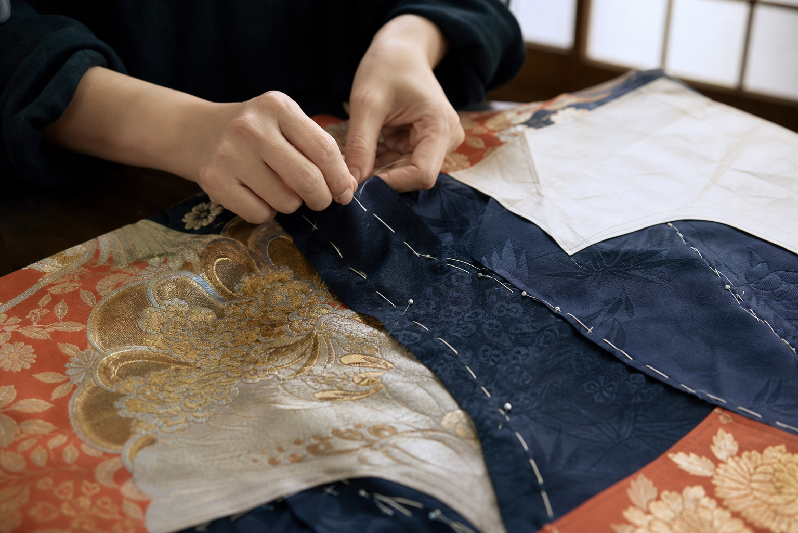
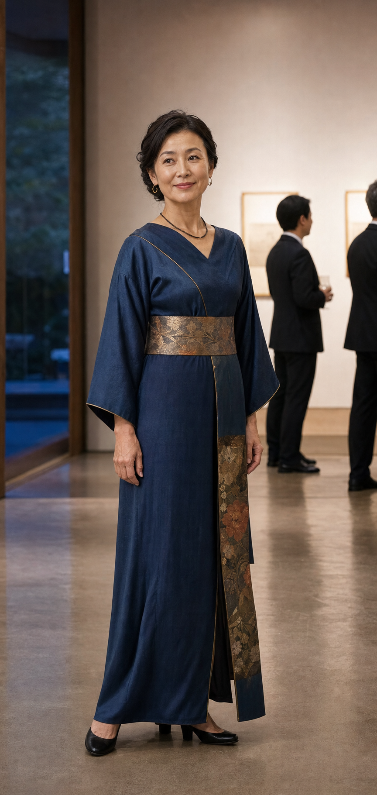
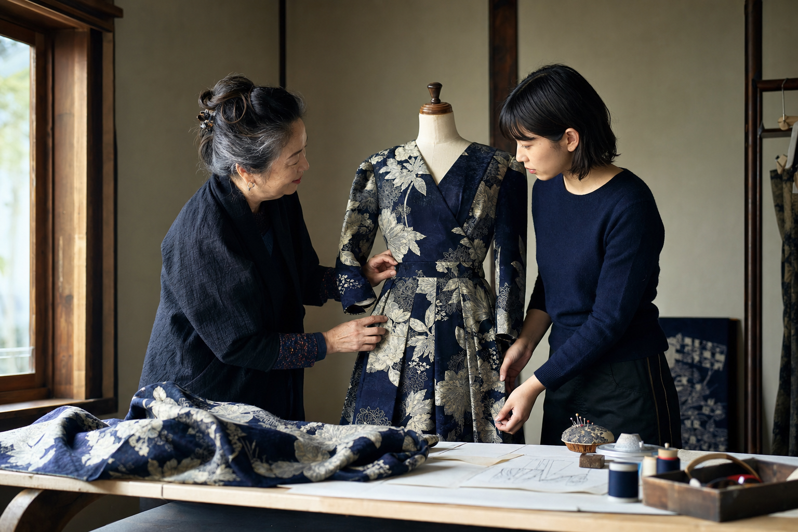
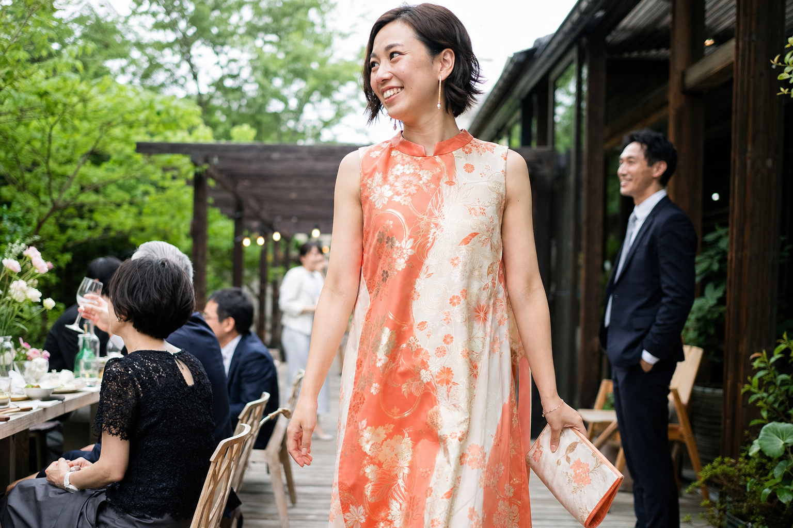
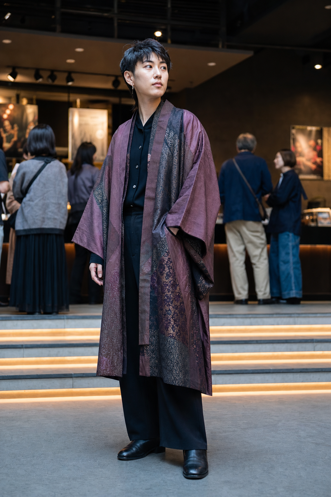

このプロジェクトの3つの挑戦
- 01箪笥に眠る古着物を、現代のドレスとしてもう一度舞台へ。
- 02柄合わせから縫製まで、京都の職人と一着ずつ丁寧に仕立てます。
- 03同じ柄は二度とない。受け継いだ物語ごと纏う一点ものです。
「もう着ない」ではなく、
「次はどう着る？」を考えたい。
祖母の箪笥を開けたとき、目に飛び込んできたのは、深い藍と金糸の花々でした。袖を通す機会はなくても、手放すにはあまりに美しい。そこからこのプロジェクトは始まりました。
古い着物には、時間がつくった柔らかさや、今では再現できない織りがあります。私たちは傷や色むらも「欠点」ではなく、その布が生きてきた証として受け止め、柄の一番美しい場所を見極めながら新しい一着へ仕立て直します。

柄を切らず、物語をつなぐ。
一点ごとの柄合わせ
布を広げ、ドレスになったときの視線の流れまで考えて裁断します。
着心地は現代的に
裏地とファスナーを備え、特別な日だけでなく長く着られる設計です。
端切れまで生かす
裁断後の小さな布は、コサージュや包みボタンとして再利用します。
約 1.2kg
一着のドレスが救う、着物の重さ。
応援購入いただいた一着につき、長く保管されていた着物または帯を2〜3点活用します。目標の30着で、およそ36kgの布に次の役目をつくります。
撮影前に、着る人と場面の幅を広げる。
ここに掲載している画像は、実際の撮影前に構図・年齢層・利用シーンを確認するための仮ビジュアルです。制作者へのインタビューで想いと言葉を掘り下げながら、実物撮影後に写真を差し替えていきます。

特別な日の一着
ギャラリー、記念日、式典など。まずは“憧れ”を担うメインビジュアルとして使える構図。

制作工程と打ち合わせ
ほどく、選ぶ、合わせる。制作者の想いと手仕事を伝えるためのドキュメンタリー構図。

家族行事・レストラン
30〜40代の友人モデルで、屋外レストランや家族行事に着ていける親しみを検証。

性別を限定しない装い
ドレスだけでなく、羽織・コート・パンツ合わせの可能性を見せるための構図候補。
仮画像で反応を見てから、友人モデル・自然光・身近なロケーションで実写撮影。Makuake本番では「実物」「実在モデル」「制作現場」の写真に置き換えます。
実行者について
TSUGI ATELIER / 佐倉 美緒
京都で衣装制作を学び、舞台衣装とブライダル縫製に15年携わる。箪笥に眠る布と、次に着る人の人生をつなぐアトリエを2024年にスタート。
プロジェクトスケジュール
- 2026.07
- プロジェクト終了・採寸のご案内
- 2026.08
- 着物の選定、デザイン相談
- 2026.09
- 裁断・縫製開始
- 2026.11
- 完成品を順次お届け
目標金額を達成しました。最初の着物選定会をご紹介します。
たくさんの応援をありがとうございます。アトリエに届いた着物の一部と、柄を見立てる工程をご紹介します。
活動レポートを読む →リスク＆チャレンジ
古着物の状態や柄により、写真と全く同じ仕上がりにはなりません。一点ものの個性として事前に写真とデザイン案をご確認いただき、合意のうえ制作します。制作状況によりお届け時期が前後する場合は、活動レポートで速やかにお知らせします。
応援コメント